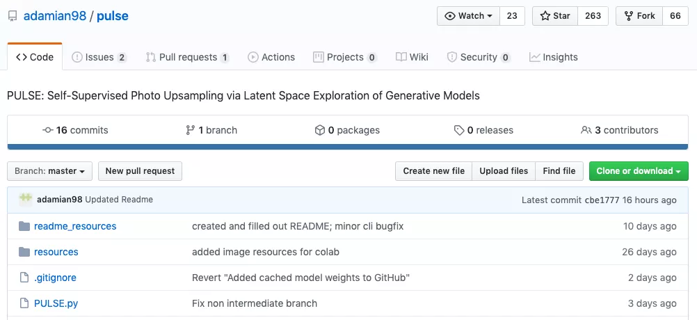
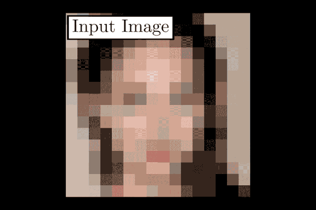
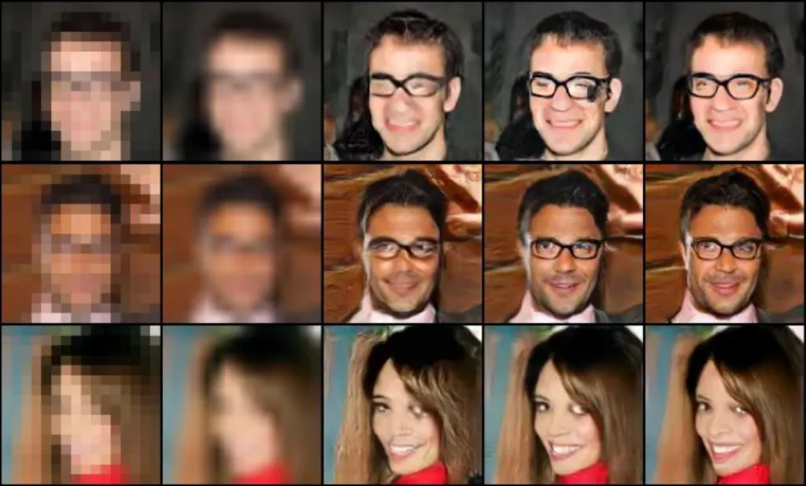
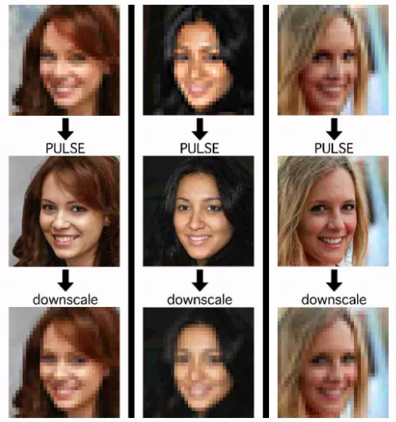
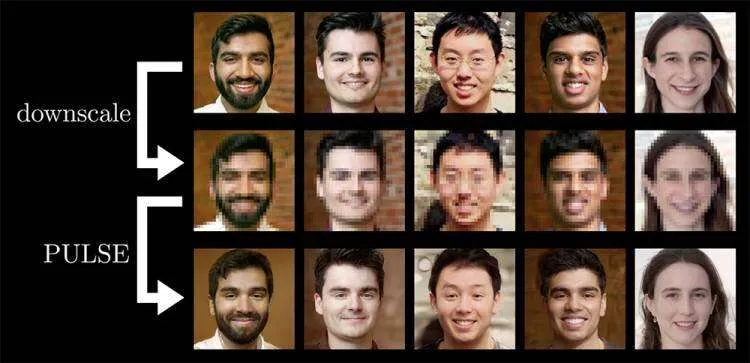
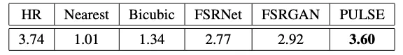

In this era of high-definition image quality, our tolerance for slag image quality is getting lower and lower.
When you search for “low resolution” and “slag quality” on Zhihu, you will see a large number of problems such as “how to remedy low-resolution photos” and “how to save slag quality”.
So, what kind of experience is it to change the screen from slag to mosaic level to high definition in seconds? Researchers at Duke University use AI algorithms to tell you.

Unprecedented, “mosaic” instantly becomes high definition
Researchers at Duke University have proposed an AI algorithm called PULSE (Photo Upsampling via Latent Space Exploration, photo upsampling through potential space exploration).
The algorithm can convert blurred, unrecognizable face images into computer-generated images, the details of which are more detailed and realistic than ever before.

If you use the previous method and want to make a blurred “headshot” clear, you can only zoom this photo up to eight times the original resolution.
However, the team at Duke University has proposed a new method that can enlarge the 16x16 pixel Low Resolution (hereinafter referred to as LR) thumbnail in 64 seconds to 1024 x in just a few seconds. 1024-pixel high-resolution (High Resolution, HR) image .
Their AI tools will “imagine” some features that did not exist, even the details that could not be seen in the original LR photos, such as pores, fine lines, eyelashes, hair and stubble, etc., after being processed by their algorithm, they can See clearly.
Let’s look at a specific example:
Cynthia Rudin, a computer scientist at Duke University who led the team, said: “It has never been possible to create super-resolution images with a lot of detail using so few pixels like before.”
In terms of practical applications, Sachit Menon, co-author of the paper, said: “In these studies, we only used the face as a proof of concept.
But in theory, the technology is universal. From medicine and microscopy to astronomy and satellite imagery, the technology can improve image quality. “
Break the traditional operation to achieve the best results
Although there have been many similar low-definition to high-definition methods before, it is the industry’s first to achieve a pixel magnification of 64 times.
Traditional method: pixel matching, prone to bugs
When dealing with such problems in the traditional way, generally after getting the LR image, you will “guess” how many extra pixels are needed, and then try to match the corresponding pixels in the previously processed HR image to the LR image.
The result of this simple matching of pixels is that pixels such as hair and skin textures will have mismatched pixels.
And this method will also ignore the perceptual details such as sensitivity in the HR image. So in the end there will be problems with smoothness and sensitivity, and the result will still look blurry or unreal.

New method: low-definition image “Lianliankan”
The new method proposed by the Duke University team can be said to open up new ideas.
After getting an LR image, the PULSE system will not slowly add new details, but traverse the HR images generated by the AI, compare the LR images corresponding to these HR images with the original image, and find the closest one.
An analogy is equivalent to taking the LR picture as a “Lianliankan” to find the most similar LR version, and then pushing it back. The HR image corresponding to this LR image is the final output.

The team used a generative adversarial network (GAN for short), which includes two neural networks trained on the same photo data set, namely a generator and a discriminator.
Among them, the generator simulates the face it has been trained to provide the face created by AI, and the discriminator obtains the output and determines whether it is enough to be fake.
With the accumulation of experience, the experience of the generator will get better and better until the discriminator cannot distinguish the difference.
They experimented with some real images, and the effect comparison is shown below:

Although there is still some gap between the generated high-resolution image and the original image, it is much clearer than the previous method.
Evaluation: better than other methods, score close to real photos
The team evaluated its algorithm on the famous high-resolution face dataset CelebA HQ, and conducted these experiments with scale factors of 64×, 32×, and 8×.
The researchers asked 40 people to rate 1,440 images generated by PULSE and five other zoom methods, with PULSE performing best, with scores almost as high as real high-quality photos.
Team members said that PULSE can create realistic images from noisy, low-quality input, even if the original image is not recognizable by eyes or mouth. This cannot be done by other methods.

However, the system cannot yet be used to identify identities, the researchers said: “It cannot turn out-of-focus, unrecognizable photos taken by a security camera into a clear image of a real person. It will only generate non-existent but seemingly real New face.”
In specific application scenarios, in addition to the above mentioned, the technology may be used in medicine and astronomy in the future. For the public, after having this black technology, you can change the old photos of N years ago to high definition. For editors and comrades, this is a great gospel, and you don’t have to look for high-resolution pictures anymore.
Reminder: The researchers will also introduce their methods at the ongoing CVPR 2020 (Computer Vision and Pattern Recognition Conference), you can pay attention to:
Thesis address:
https://arxiv.org/pdf/2003.03808.pdfReference materials:
https://www.sciencedaily.com/releases/2020/06/200612111409.htm